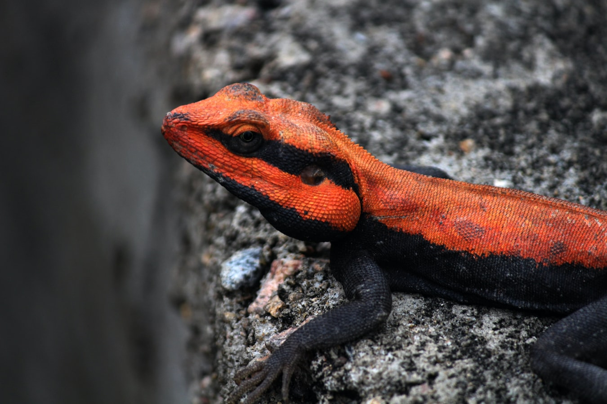

Krótkie informacje o gabinecie, od kiedy funkcjonuje, etc.
ul. Okulickiego 53, 44-274 Rybnik
kontakt@wenterynarzrybnik.pl
530-339-124
Oferowane usługi
Gabinet świadczy usługi z zakresu profilaktyki, diagnostyki, leczenia zwierząt domowych (towarzyszących) oraz ptaków i zwierząt egzotycznych. Usługi świadczone są w gabinecie oraz z dojazdem do klienta, po wcześniejszym umówieniu telefonicznym.
Profilaktyka i diagnostyka
Przeprowadzam badania profilaktyczne, zajmuję się odrobaczaniem zwierząt, realizuję szczepienia ochronne i pomagam w doborze karmy. Przeprowadzam diagnozę na podstawie badań.
Leczenie
Wykonuję zabiegi chirurgiczne (w tym kastrację i sterylizację), leczę choroby wewnętrzne oraz zajmuję się profilaktyką stomatologiczną. Zwalczam także pasożyty i leczę choroby skóry.
Dojazd do klienta
Problemy z dojazdem? Bez obaw. Oferuję możliwość leczenia z dojazdem bezpośrednio do domu w promieniu ... km oraz opiekę pooperacyjną.
Lek. wet. Robert Czekalski
Miejsce na krótką notkę bio
“A small river named Duden flows by their place and supplies it with the necessary regelialia. It is a paradisematic country, in which roasted parts of sentences fly into your mouth.”
Janet Morris, Facebook
Lek. wet. Robert Czekalski
Miejsce na krótką notkę bio
“A small river named Duden flows by their place and supplies it with the necessary regelialia. It is a paradisematic country, in which roasted parts of sentences fly into your mouth.”
Janet Morris, Facebook
Zwierzęta, jakimi się zajmuję
Specjalizuję się głównie w leczeniu zwierząt towarzyszących (domowych) a także ptaków oraz zwierząt egzotycznych.
Zwierzęta domowe
Kot czy pies? W gabinecie leczę wszystkich czworonożnych przyjaciół. Pomagam także mniejszym zwierzętom towarzyszącym, takim jak króliki, świnki morskie i inne gryzonie.
Ptaki
W twoim domu gości papuga, hodujesz gołębie, a może znalazłeś/aś większego ptaka w potrzebie? Możesz śmiało przywieźć go do gabinetu, zajmuję się ich leczeniem!

Zwierzęta egzotyczne
Posiadasz nietypowego pupila? Leczę także zwierzęta egzotyczne, takie jak gekony, jeże, ptaszniki, węże i inne!


Janet Morris, Facebook